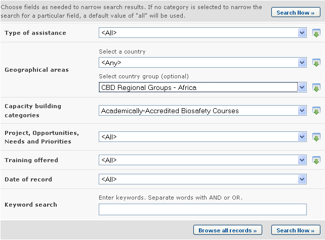

URL: http://bch.cbd.int/database/activities/
Under Article 22 of the Protocol, Parties are required to cooperate in the developing and/or strengthening of human resources and institutional capacity for the effective implementation of the Protocol. Through the BCH, Parties and others can access information about capacity-building and other assistance for implementation of the Protocol. In addition, governments can register their capacity-building needs and priorities in the BCH.
The search page for information about capacity building can be accessed from the link on the Finding Information drop down menu on the navigation bar, or from the link in the left-hand menu of the Finding Information page, or from the Capacity Building link in the text of that page.

On the Search for information on Capacity-Building page the user can search for:
-
Biosafety Capacity Building Projects;
-
Capacity-Building Opportunities;
-
Capacity-Building Needs and Priorities;
-
Academically - Accredited Biosafety Courses;
-
Outcomes and Lessons Learned
On the Search for information on Capacity-Building page there are several search criteria boxes:
-
Type of assistance: Selection list to narrow search results to countries proving or requiring assistance.
-
Country: Selection list field for selecting a country.
-
Region: Selection list field for selecting a region.
-
Capacity building categories: Selection list to narrow search results to records regarding specific categories of capacity building.
-
Project, Opportunities, Needs and Priorities: Additional search criteria field to add more criteria to narrow the search results. By selecting items in this list, the user can make the following new fields appear:
-
Name of the project: keyword field for searching by project name
-
Capacity Building areas: Selection list for narrowing the search results by capacity building area
-
Status: Selection list for narrowing the search results by project status
-
Type of implementing agency: Selection list for narrowing the search results to records which match the specified types of implementing agency
-
Lead organization: Keyword field for searching by organization
-
Source of funding: Selection list for narrowing search results to specific sources of funding
-
-
Training offered: Additional search criteria field to add more criteria to narrow the search results. By selecting items in this list, the user can make the following new fields appear:
-
Thematic area: Selection list for narrowing the search results to the specified thematic areas in the training offered
-
Type of accreditation: Selection list for narrowing the search results to the specified type of accreditation offered
-
-
Date of record: Date field for narrowing the search results to a time interval
-
Keyword search: Keyword field for narrowing the results by keyword
See “Using the search pages” to learn about types of fields and their operation.
In addition to the features described in “Managing Search Results”, the Search results page for Capacity-building provides a feature for sorting records. By selecting an option in the Sort records by box, records in the result list will be sorted accordingly. Also, at the end of the page there is an Export all results to XML link. This allows the user to download the search results in XML (Extensible Markup Language) format, a standard format useful for sharing data across different systems.

Example. A user wishes to obtain information about capacity building courses in African countries. The user selects (i) CBD Regional Groups - Africa in the Region box and (ii) Academically-Accredited Biosafety Courses in the Capacity building categories box. Clicking on the Search button presents the search results. Information about each of these activities can be accessed by clicking on the record title.


This picture was taken on February 2010 with the only purpose of providing an example on the usage of the BCH.